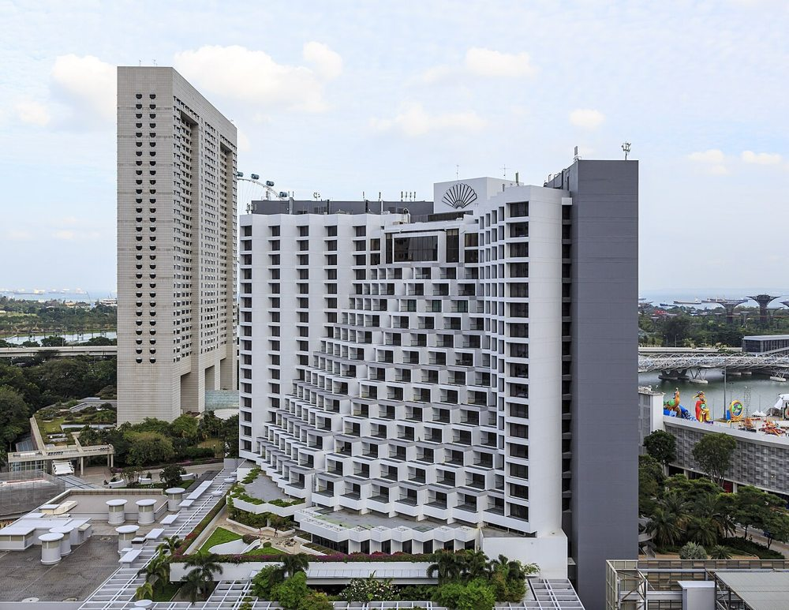
OUR BASE / 4 NIGHTS
文華東方酒店
5 Raffles Avenue
Singapore 039797
9 月 14 日入住 · 9 月 18 日退房
入住 15:00 起、退房 12:00。早到可先請櫃台寄存行李，實際進房時間依飯店安排。
長肜旅行社・2026 城市旅行
住在濱海灣，慢慢看一座城。
看海、逛街、坐下吃一餐，
每天都留一點空白。
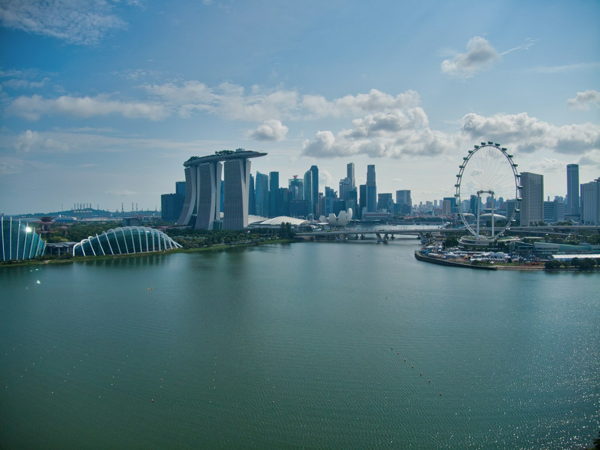
住 文華東方酒店
走 依興趣自由挑選
歇 累了就找地方坐坐
01 / SINGAPORE JOURNAL
文華東方酒店 Mandarin Oriental, Singapore

OUR BASE / 4 NIGHTS
5 Raffles Avenue
Singapore 039797
9 月 14 日入住 · 9 月 18 日退房
入住 15:00 起、退房 12:00。早到可先請櫃台寄存行李，實際進房時間依飯店安排。
飯店與濱海廣場相連，簡單用餐、買水與日用品很方便。出發前請櫃台協助確認店家與上車地點。
館內有櫻桃園粵菜餐廳、莫爾頓牛排館（Morton’s）與 MO BAR。想在飯店內用餐或喝一杯，可先請櫃台確認營業時段與訂位。
給司機看英文地址即可。飯店名稱請認明 Mandarin Oriental，避免與其他濱海灣酒店混淆。
02 / SINGAPORE JOURNAL
先看地標方位，再依體力選擇想去的地方。
西南｜聖淘沙・海洋館
西北｜萬禮・動物園
東方｜樟宜機場・星耀樟宜
03 / SINGAPORE JOURNAL
星耀樟宜・入境後或離境前的參考選擇
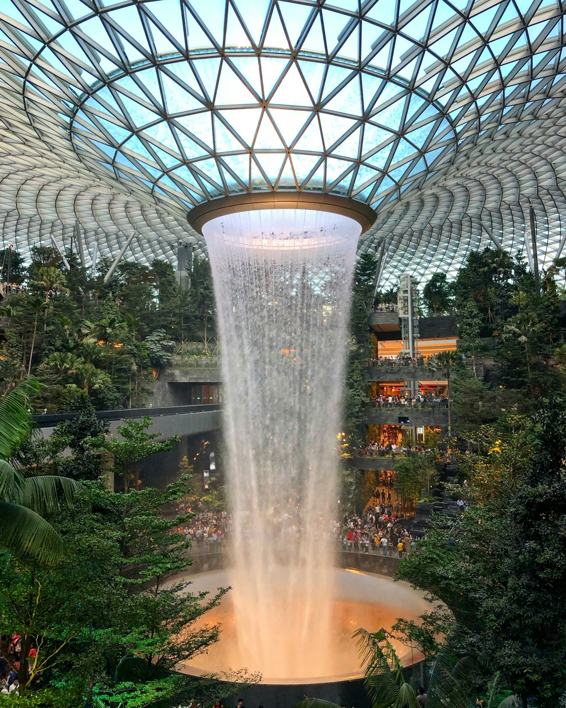
含寄物、散步約 1.5–2.5 小時
抵達 T3 後，先通關、領行李。星耀樟宜位於公共區域，跟著指標前往；累了就直接搭車回飯店。
星耀樟宜一樓 Early Check-In Lounge 附近有 Smarte Carte 行李寄存，T2、T3 公共區也有據點。Jewel 寄存處提供 24 小時服務，行李須接受安全檢查。
行李寄存按「每件、每 24 小時」計費，即使只寄數小時也算一天。費用參考：散件 S$6、10 公斤以下 S$11、10 公斤以上 S$16、特大件 S$19；現場依行李分類報價。
取回行李再搭車去飯店，離峰約 20–30 分鐘。瀑布運作時間與商店開門時間不同，請先查當日公告。
04 / SINGAPORE JOURNAL
擇適當地點散步前往，回程可叫車。
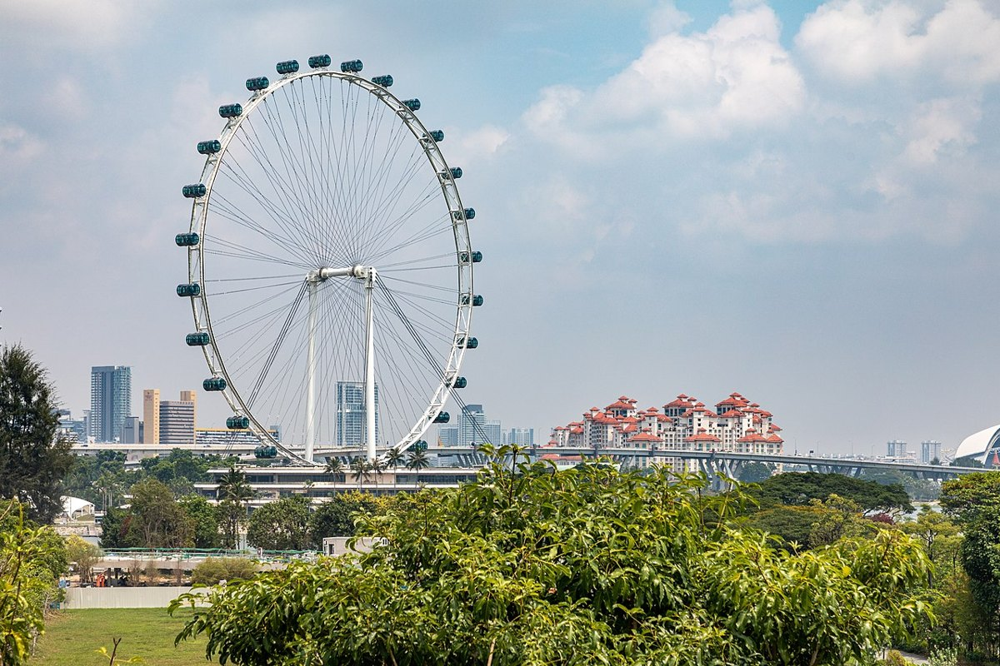
Singapore Flyer
飯店步行前往與等候 1.5–2 小時
先看時光膠囊展覽，再坐進空調包廂，約半小時轉一圈。適合用坐著的方式看海灣。
30 Raffles Avenue。從飯店往東走可到，參考步行約 6–10 分鐘；帶長輩請另留過馬路與休息時間。
營業時間參考 10:00–22:00，最後入場 21:30。成人票約 S$40–46；兒童（3–12 歲）約 S$25–28，未滿 3 歲免費。購票以當日票種與優惠為準。
一般票可依現場情況購買；惡劣天氣可能停駛。特殊飲品、香檳或用餐方案須另訂。
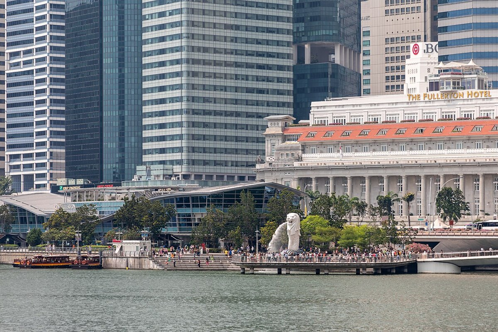
Merlion Park
現場 20–40 分鐘
隔著海灣看金沙三塔，停下來拍張合照。選清晨或傍晚，避開中午曝曬與久站。
1 Fullerton Road。公園全天開放，免費參觀。
由飯店往濱海藝術中心、禧年橋方向走；這一側接富麗敦，與螺旋橋是不同方向。步行與拍照加休息，來回可留 1–1.5 小時。
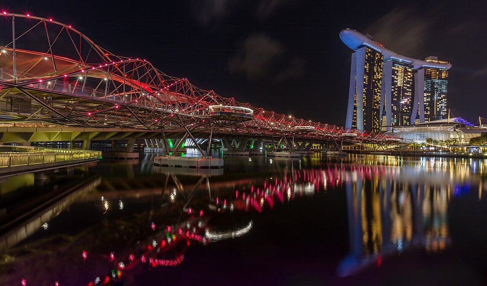
Helix Bridge
飯店步行單程含拍照約 20–30 分鐘
從飯店往青年奧林匹克公園一側接橋，再走向金沙。橋上看海灣，過橋後進商場吹冷氣。
不必繞到魚尾獅才上橋。橋上遮蔭有限，散步安排在日落前後；實際起點與通行狀態請看 Google Maps。
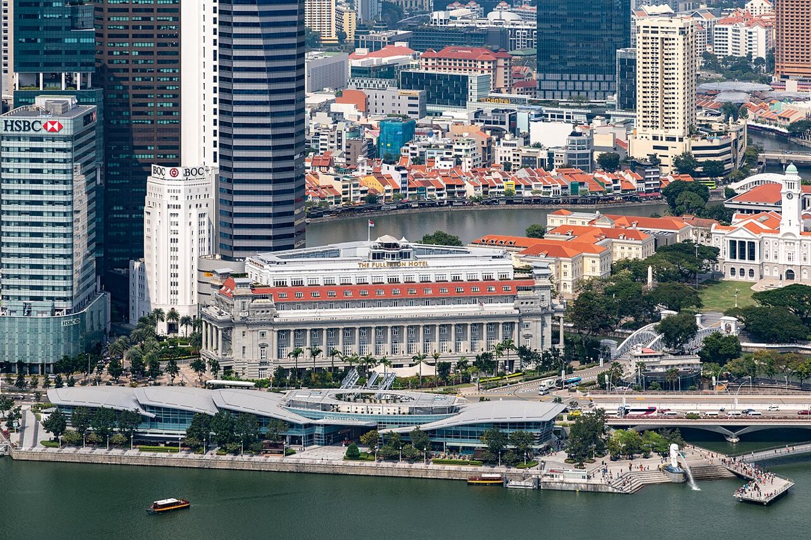
The Fullerton Hotel Singapore
15–30 分鐘
走到河口看看歷史建築與河岸。公共區域能否進入依現場安排；想喝下午茶，先訂位再過來。
1 Fullerton Square。由魚尾獅一帶續走可到。這棟歷史建築曾作為新加坡郵政總局，適合欣賞外觀與河岸。
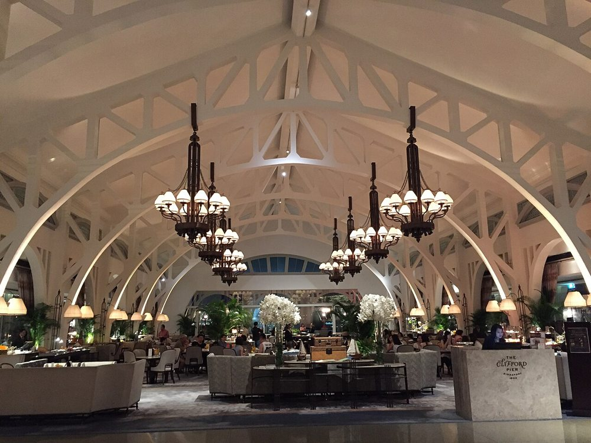
The Clifford Pier
外圍 15–20 分鐘
看舊碼頭建築與海灣，不一定要進餐廳。若想用餐，再查當日時段與衣著要求，預留 1.5–2 小時。
位於富麗敦海灣酒店。用餐前可致電 +65 6877 8911 確認；餐廳區域不等於全天開放的公共大堂。
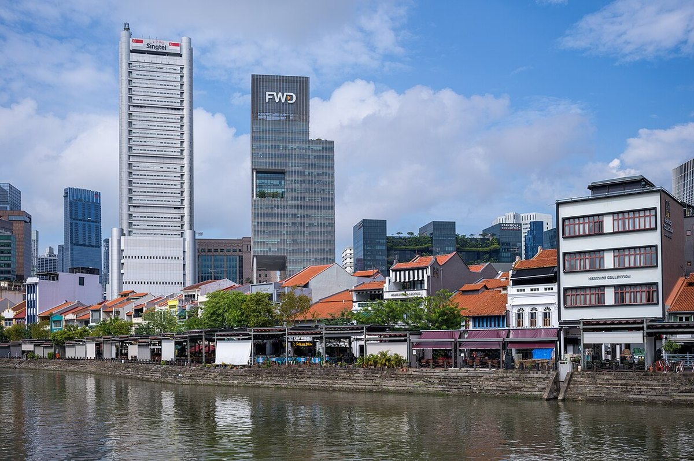
Boat Quay
河岸 20–40 分鐘
沿新加坡河的店屋慢慢走。喜歡哪一段就坐下，點餐前先看價格；用餐再留約一小時，回程可叫車。
05 / SINGAPORE JOURNAL
下午在室內，夜晚再走到海灣。
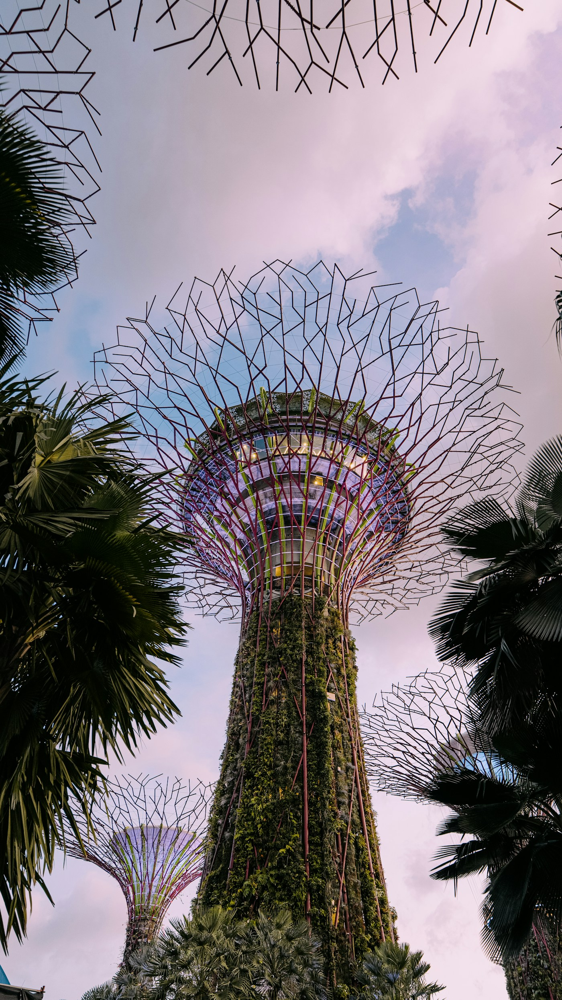
Gardens by the Bay
一座溫室加超級樹約 2–3 小時
熱的時候先逛花穹或雲霧林，晚上再看超級樹。不必兩座溫室全部走完；進出園區也要留體力。
18 Marina Gardens Drive。戶外園區 05:00–02:00；溫室通常 09:00–21:00，花穹最後入場 20:30，雲霧林 20:00。
花穹與雲霧林有定期維護日。2026/9/13 查詢的維護表未列本次 9/14–18 旅遊期間關閉；出發前仍可點官方連結確認。溫室票價依特展、票種與日期而不同。
超級樹燈光音樂秀參考場次為 19:45、20:45。只看超級樹與一場燈光可留 45–75 分鐘；若接金沙 21:00 水舞，選早一場並留足移動時間。
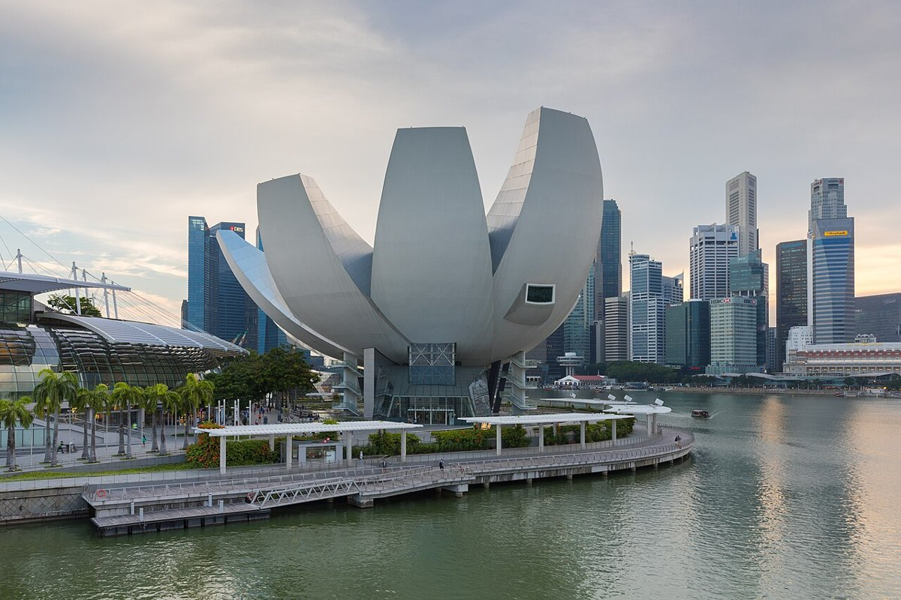
ArtScience Museum
一個展覽 1–1.5 小時
金沙旁的蓮花造型建築。午後下雨或太熱時，挑一個有興趣的展覽即可；門票依特展與日期選購。
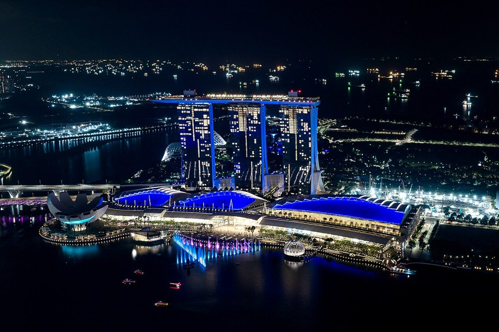
Spectra · Event Plaza
表演約 15 分鐘
到金沙購物廊外的活動廣場，看水幕與海灣燈光。提早約 10 分鐘抵達，不必為了卡位站太久。
官方場次：週日至週四 20:00、21:00；週五、週六另有 22:00。免費，遇天候或特殊活動以現場公告為準。
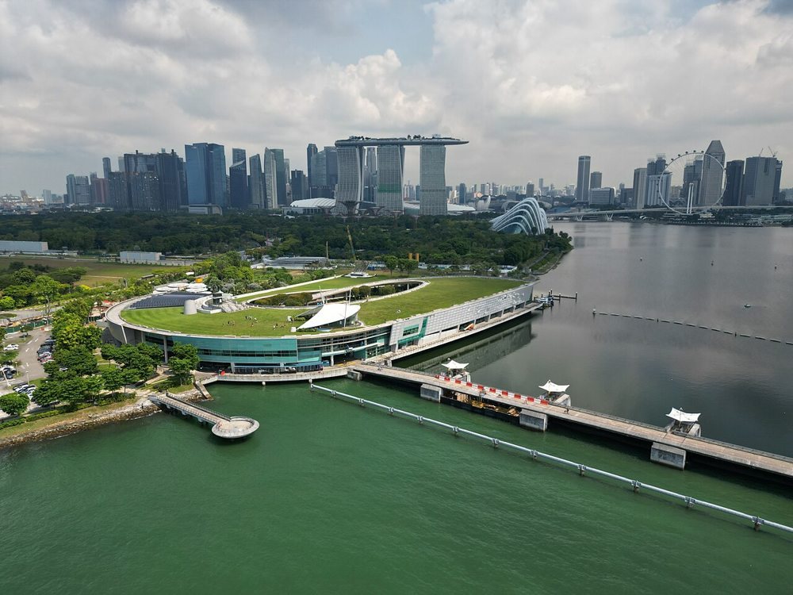
Marina Barrage
現場 30–45 分鐘
堤頂草地可看金沙、摩天輪與城市天際線。從金沙購物廊過來仍有一段距離，距離較遠建議搭計程車，或先確認實際步行路線；傍晚較舒服。
屋頂草地遮蔭少，只建議傍晚。花園水岸目前有工程繞行公告，步行路線以現場為準。
06 / SINGAPORE JOURNAL
烏節路看街區，金沙集中逛旗艦。
叫車到 ION百貨 → 精品與珠寶 → 地下通道往高島屋 → 吃午餐。還有體力，再到百利宮；不必把整條街走完。
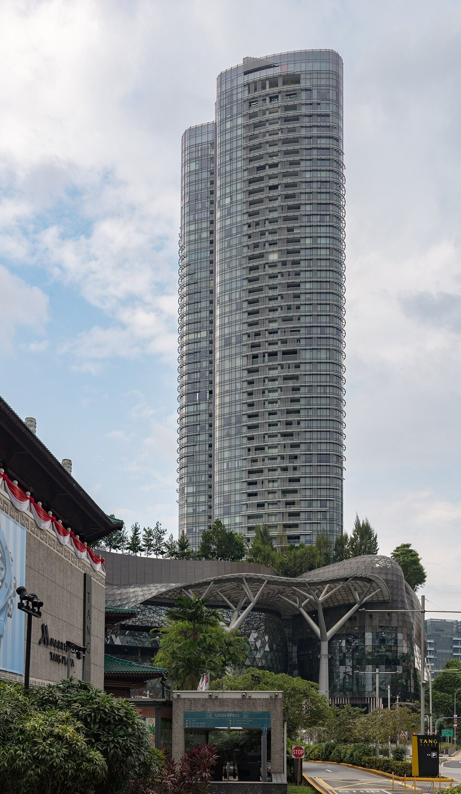
ION Orchard
1-2 小時
先看一樓旗艦與珠寶，再往地下美妝樓層。想休息時，留在同一棟吃午餐；不必一次逛完所有樓層。
2 Orchard Turn｜Orchard 站。
營業時間參考 10:00–22:00。從飯店搭車約 12–20 分鐘，依車流調整。只看精品可留 60–120 分鐘，連同其他樓層與用餐可留 4–5 小時。
可找 Louis Vuitton、Dior、Chanel、Prada、Gucci、Loewe 與珠寶品牌；店舖及樓層依當日商場目錄。地下通道可接威士馬廣場與義安城。
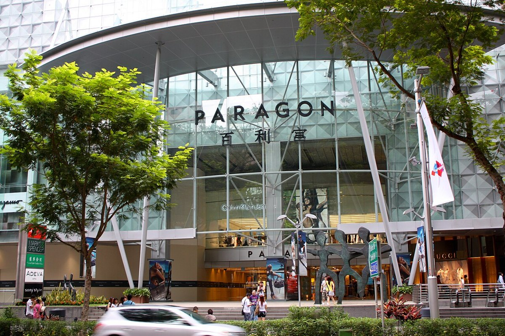
Paragon
1-2 小時
精品、生活用品與超市可以一起逛。若 ION 人多，這裡可作為另一個選擇；留一段坐下喝咖啡的時間。
290 Orchard Road。營業時間參考 10:00–22:00。從 Orchard 站 A 出口步行約 5 分鐘，地下並非完全相連，途中仍有戶外路段。
可找 Prada、Gucci、Miu Miu、Ferragamo、Burberry、Brunello Cucinelli 與 Van Cleef & Arpels。從 Orchard 站過來仍有戶外路段。
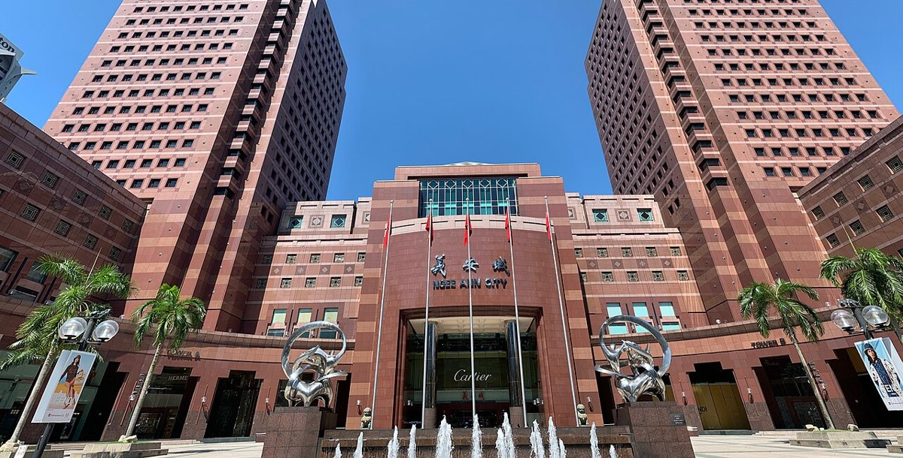
Takashimaya / Ngee Ann City
1–2 小時
精品、美妝、地下食品樓與紀伊國屋，可以照熟悉的百貨節奏走。紅色花崗岩雙塔很好認。
391 Orchard Road。高島屋營業時間參考 10:00–21:30。
精品加美妝約一小時，食品樓與書店再留一小時；逛累了先用餐。ION 至義安城可利用地下通道。
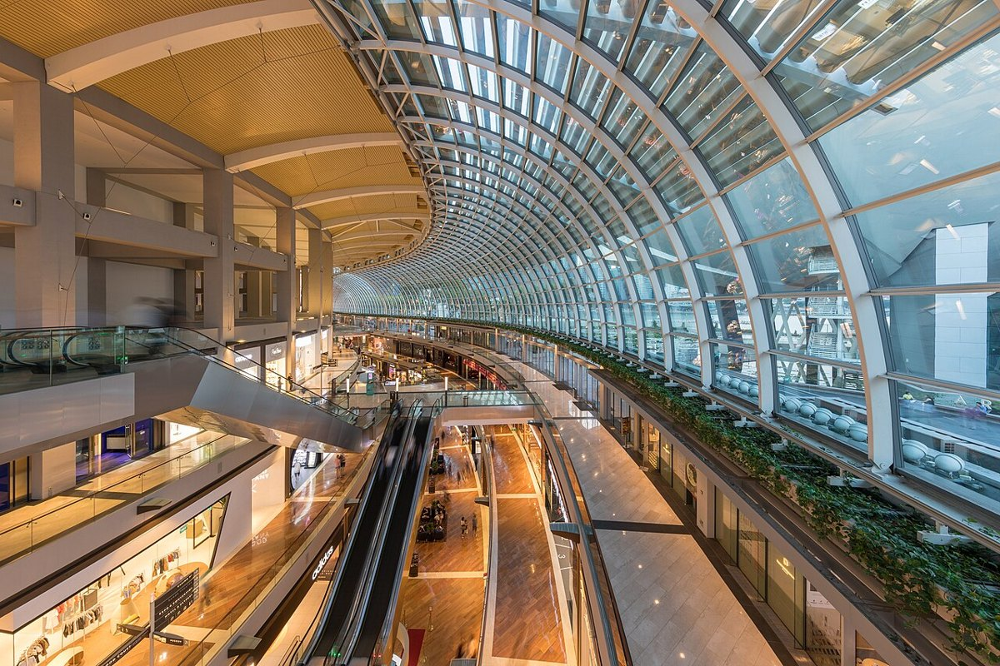
The Shoppes at Marina Bay Sands
精品 2–3 小時；含咖啡約 4 小時
運河、旗艦店與海灣在同一處。想看特殊建築，可順路走到水上的 LV 水晶亭，再在海灣邊坐一坐。
Bayfront Avenue｜Bayfront 站。
精品店營業時間參考：週日至週四 10:30–22:00；週五、週六與假日前夕 10:30–23:00。各店可能不同。
Hermès、LV、Prada、Gucci、Chanel、Dior 與鐘錶珠寶可集中看。從飯店搭車較省力；步行經螺旋橋，請預留過橋與商場內移動時間。
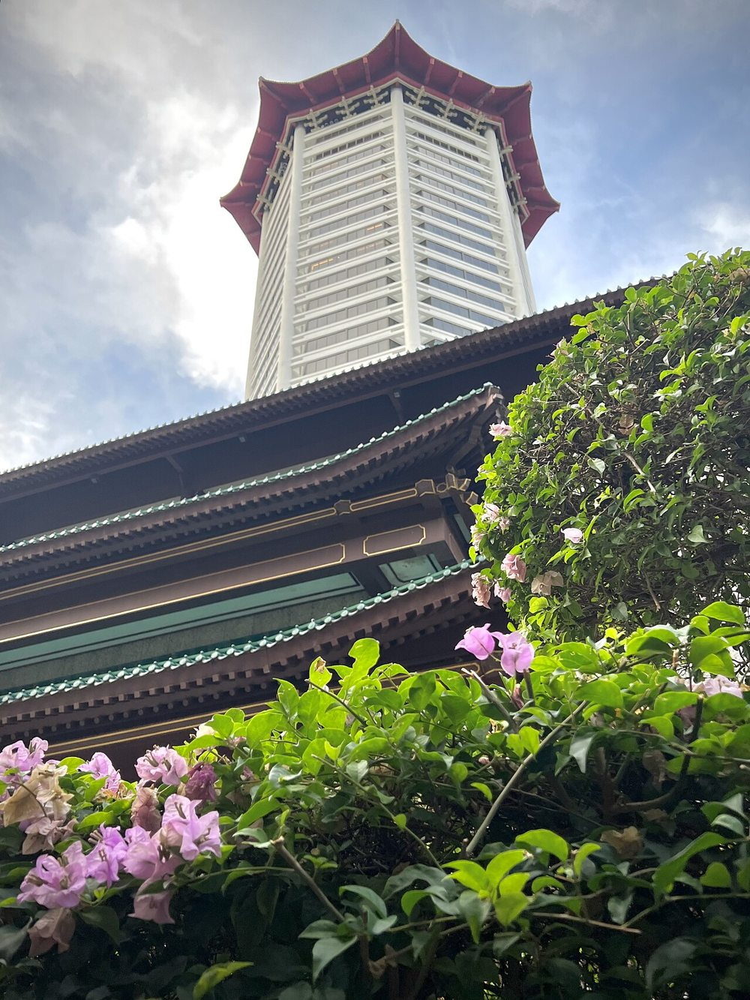
TANGS at Tang Plaza
30–60 分鐘
位於烏節路與 Scotts Road 路口的老牌百貨。想看生活選物，或暫時離開精品樓層，可以順路進去。
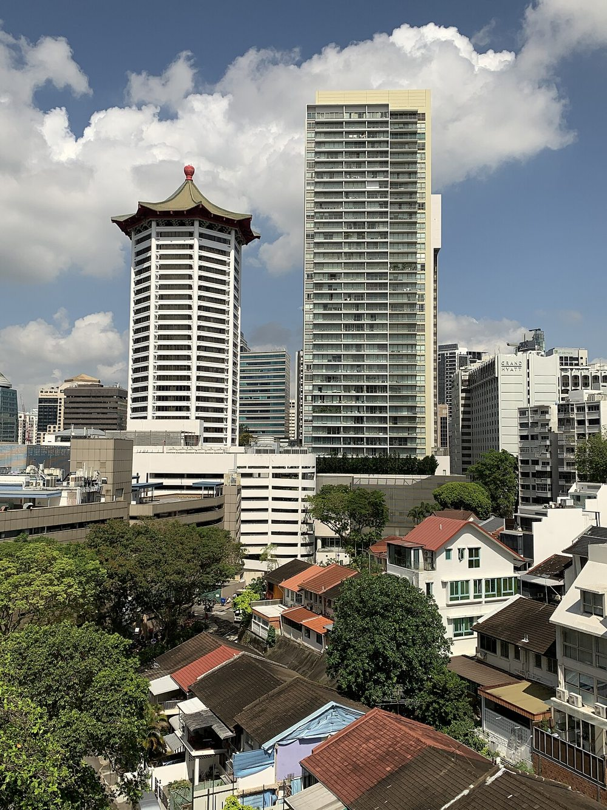
Scotts Square
路過 20–40 分鐘
體量較小，適合路過看一看或喝杯咖啡，不必專程安排半天。
想看水上建築選金沙 LV 水晶亭；烏節路可看 ION 或高島屋。
ION 或金沙可集中比較；美妝與時裝店可能在不同樓層。
金沙可直接查購物廊目錄；烏節路則看高島屋一帶。
ION、百利宮與金沙均可查店舖；想慢慢看可先選百利宮。
烏節路多個商場與金沙都有選擇，就近逛即可。
可依想看的品牌選擇商場。店舖、樓層與庫存可能調整，現場以商場目錄與品牌門市為準。
07 / SINGAPORE JOURNAL
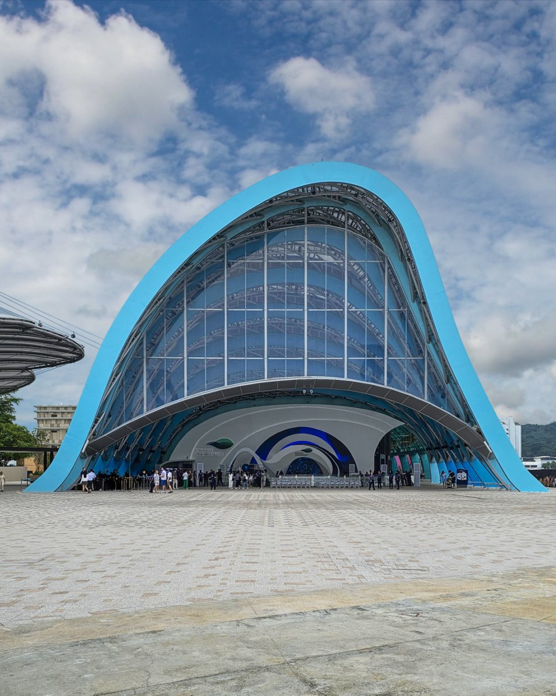
Singapore Oceanarium
觀賞 2–3 小時；慢走 3–4 小時
留時間坐著看大型水槽。同一天只排這個重點，回市區後吃飯、休息即可。
地址：24 Sentosa Gateway，位於聖淘沙名勝世界。叫車時可直接輸入 Singapore Oceanarium。
由飯店叫車約 15–25 分鐘，另留上下車與進館時間。大眾運輸：港灣站 → 怡豐城三樓聖淘沙捷運 → 名勝世界站。
一日票參考 S$43 起；一般營業時間約 10:00–20:00，請查所選日期的入場時段。未滿 4 歲兒童由成人陪同可免費入場；尖峰可能採分時入場。海哺類觀景窗目前暫停。
Singapore Zoo
主區加電車 3–4 小時
若選動物園，就把早晨留給它。多利用園內電車與休息點，帶水與帽子；當晚不再追加夜間野生動物園。
80 Mandai Lake Road。營業時間參考 08:30–18:00，最後入場 17:00。非居民成人票參考 S$49、兒童（3–12 歲）S$34，含園內電車。未滿 3 歲兒童免費，須由 21 歲以上持票成人陪同；購票以官網為準。
飯店搭車約 25–40 分鐘，尖峰更久。亦可搭 MRT 至 Khatib 轉接駁；接駁時間、票價及離園計程車附加費請出發前再查。
大眾運輸可搭南北線至卡迪站 Khatib（NS14），由 A 出口轉萬禮接駁車。接駁參考首班 08:30、約每 12–15 分鐘一班、車程約 15 分鐘；車資約 S$2.50，以當日公告為準。
園區離場計程車在 13:00–23:59 時段，參考另加 S$5；叫車服務、尖峰與道路費用可能另計。
08 / SINGAPORE JOURNAL
小販一餐約 S$4–10，先找座位，再慢慢點。
帶零鈔；建築開放不等於每攤營業。九月有清潔休市，出發前點 Google Maps 看目標攤位當日狀態。
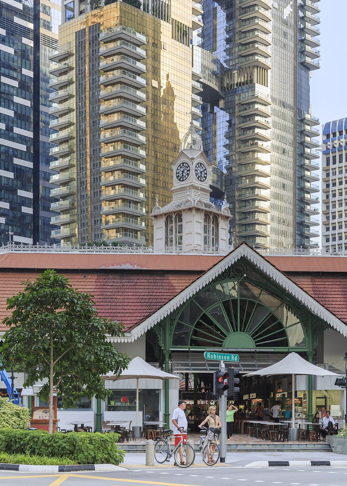
Lau Pa Sat
一餐 45–90 分鐘
老巴剎室內小販一餐約每人 S$5–10，晚上也可到沙嗲街用餐。沙嗲每串參考約 S$0.60–1.20；點沙嗲或海鮮前先問清楚份量與總價。
18 Raffles Quay。從飯店叫車較省力，步行路線比直線距離長，請看當日導航。
沙嗲街位於 Boon Tat Street，平日參考 19:00 起、週末 15:00 起，常見營業至凌晨 03:00；各攤可能不同。室內攤位多於 21:00–23:00 間陸續收攤。帶新幣小鈔。
鄰近 Raffles Place 地鐵站，步行參考約 3–5 分鐘。平日 19:00–20:30 可作為沙嗲街晚餐時段參考，週末晚間人潮較多。
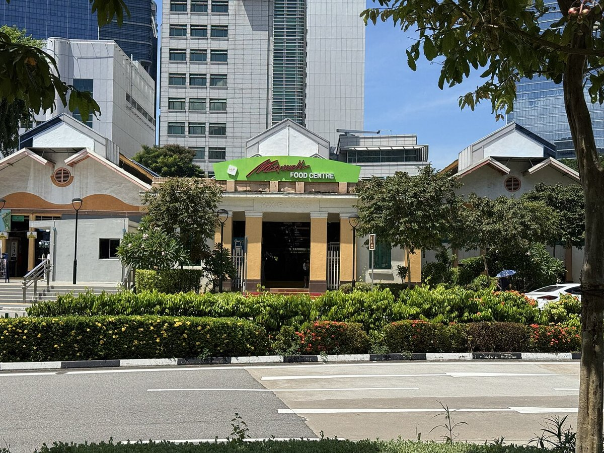
Maxwell Food Centre
45–60 分鐘，排隊另計
想吃天天海南雞飯，可先看當日營業狀態；阿仔海南雞飯是另一個選擇。11:30 前或 14:00 後較從容。
1 Kadayanallur Street。天天海南雞飯位於 #01-10/11，常見週二至週日約 10:00–20:00，週一休息；出發前再看當日營業狀態。阿仔海南雞飯可作為另一選擇。
由飯店叫車約 8–12 分鐘。中心開著不代表每攤營業。
中心整體開放時間參考 08:00–22:00，各攤不同。熱門攤位平日排隊常需 15–25 分鐘，遇人多就換一攤或先坐下休息。
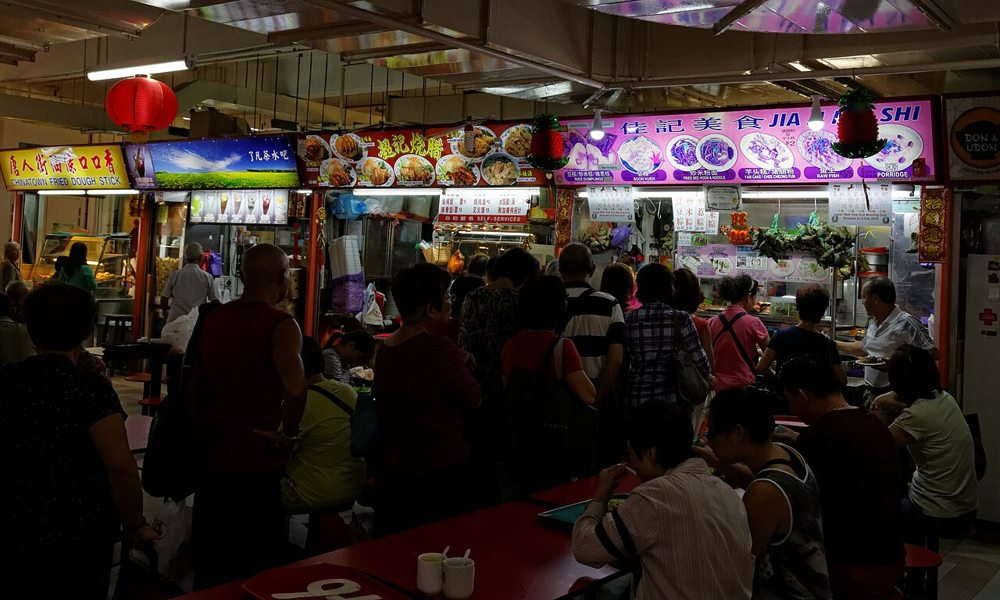
Chinatown Complex Food Centre
1–1.5 小時
熟食中心約有 260 個攤位，適合想多看在地小吃的人。香港油雞飯麵位於 #02-126，曾獲米其林星；先確認當日攤位與營業狀態，不必一次排很多攤。
335 Smith Street，熟食中心在二樓。避開 12:00–13:30；人多又熱時，換一個有位子的地方吃也很好。
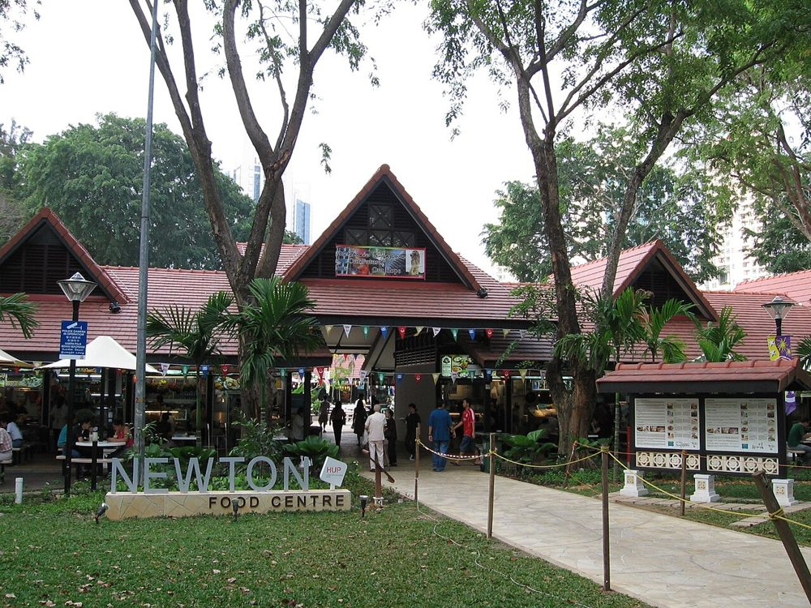
Newton Food Centre
1–1.5 小時
烏節路逛完可搭車過來吃沙嗲或海鮮。多為戶外座位，點海鮮前確認重量、單價與總價。
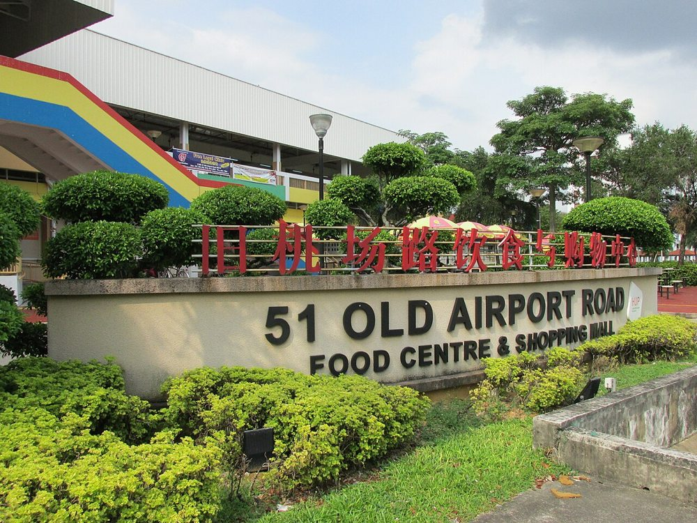
Old Airport Road Food Centre
1–1.5 小時
想找較在地的小吃，可以安排一趟。飯店搭車約 15–20 分鐘；先查清潔休市日與目標攤位，抵達日先不趕過來。
09 / SINGAPORE JOURNAL
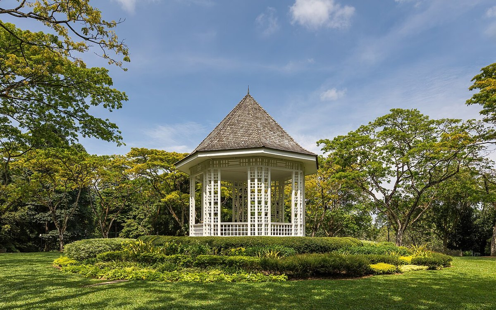
Singapore Botanic Gardens
散步 1–1.5 小時；含蘭花園 2–3 小時
植物園免費，國家蘭花園另購票。標準票成人 S$15、60 歲以上 S$3、未滿 12 歲免費。園區很大，叫車或導航請先選好入口。
植物園開放時間為 05:00–24:00；國家蘭花園 08:30–19:00，最後售票及入場 18:00。
若主攻蘭花園，Tyersall 入口是較方便的上下車位置；園內有輪椅可通行路線，入口附近可買飲料休息。
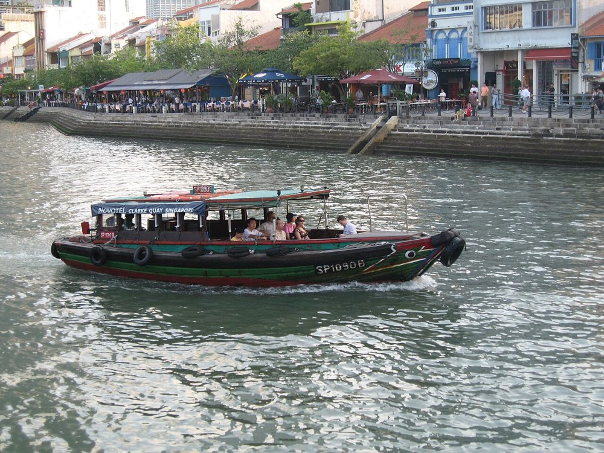
Singapore River Cruise Clarke Quay
約 30–45 分鐘
可以坐著看河岸。先確認營運商、登船碼頭與回程位置；不同船班不一定互通。
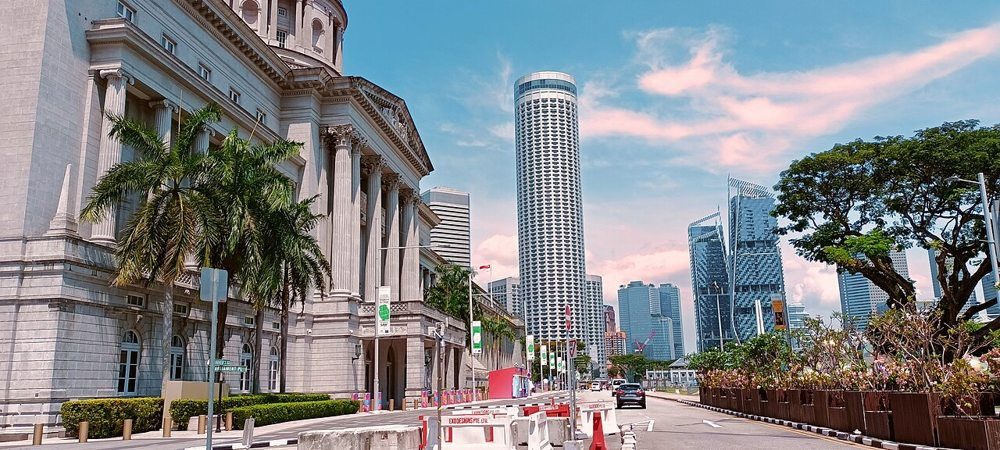
National Gallery Singapore
1.5–2 小時
1 St Andrew’s Road。每日 10:00–19:00，最後入場 18:30；只看一部分展覽與建築可留 1.5–2 小時，想多看幾個展區可留更久。一般非居民門票參考 S$20，特展票另計。
目前大華銀行東南亞展廳暫停開放，預計於 2027 年底重新開放；館內其他展區仍有國家典藏可看。
特展與一般入場票的範圍可能不同，購票時請確認想看的展覽是否包含在內。
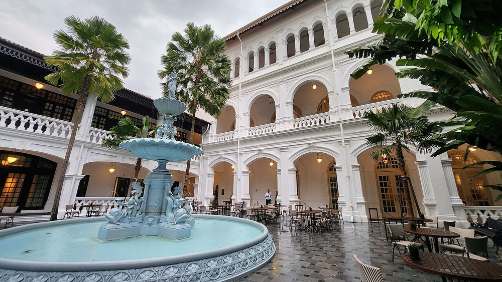
Raffles Singapore
1–1.5 小時
可安排下午茶或到酒吧喝一杯新加坡司令。大堂與公共區域進出依飯店安排；用餐先訂位。
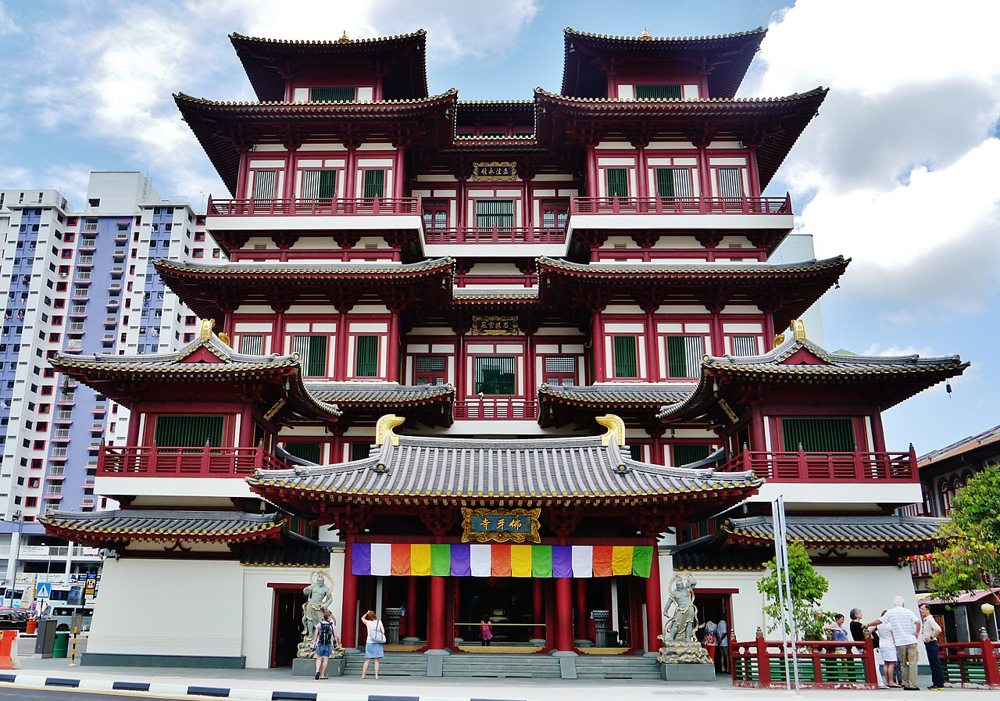
Buddha Tooth Relic Temple Singapore
45–90 分鐘
熟食中心用餐後，看看佛牙寺外觀與南橋路店屋。進宗教場所時依現場衣著與參觀規定。
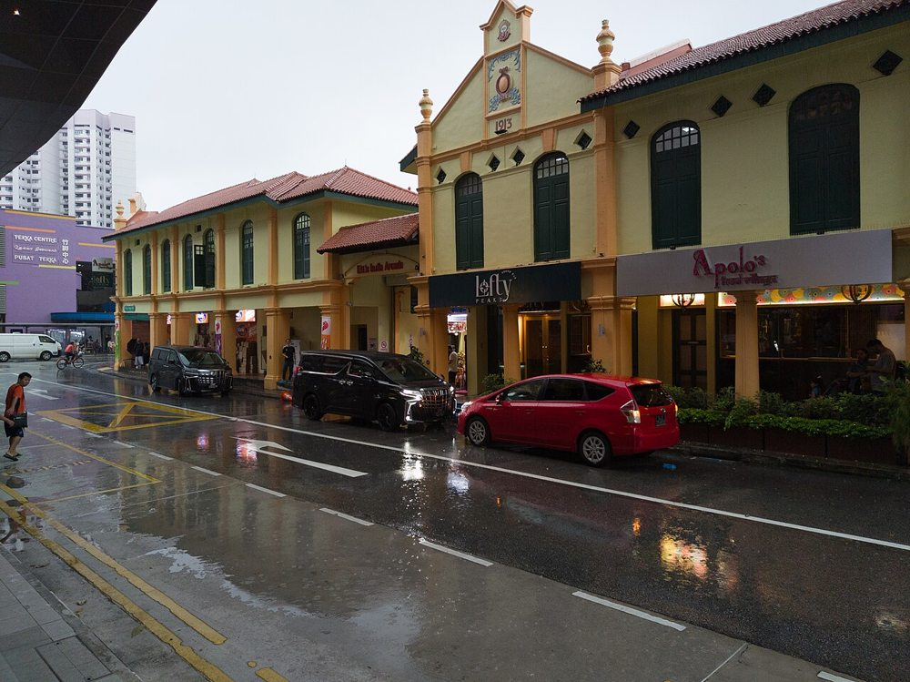
Tekka Centre
1.5–2 小時
竹腳中心與周邊街道，選平日清晨或傍晚慢慢逛，避開週末午後人潮與日曬。
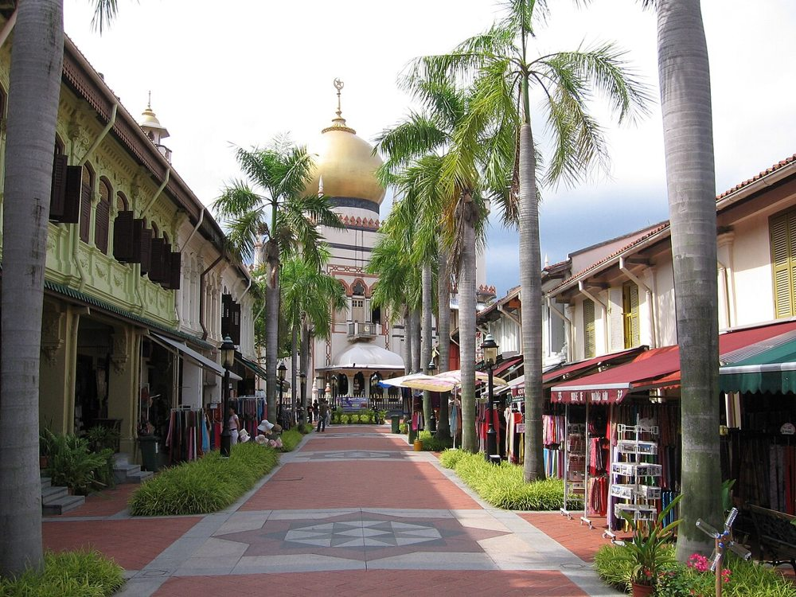
Sultan Mosque
1–1.5 小時
看蘇丹回教堂外觀，再走到哈芝巷喝杯飲料。戶外路段較多，熱了就進店休息。
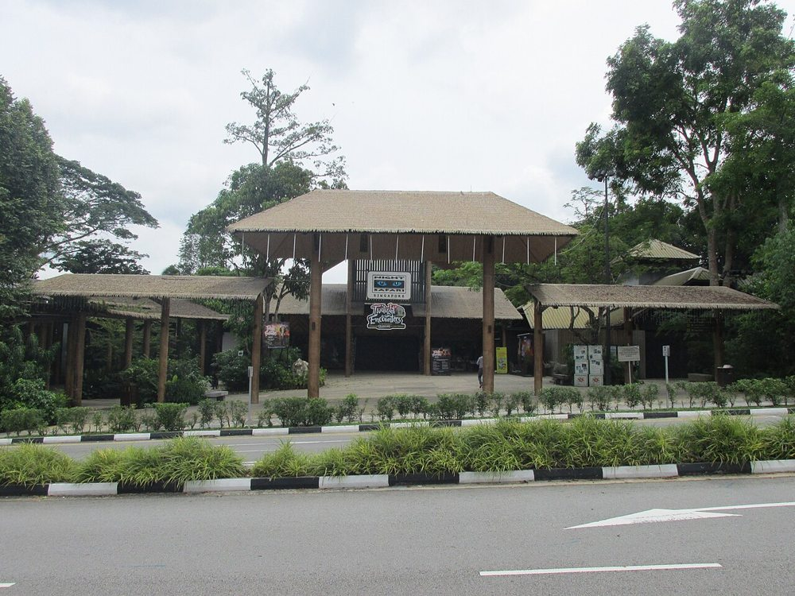
Night Safari Singapore
2.5–3.5 小時
夜間野生動物園與日間動物園同在萬禮。每日 18:00–24:00，最後入場 23:15；步道與電車參考 19:00 起。請依官網所選入場時段抵達，往返另留叫車時間。
夜間行走請穿防滑鞋，燈光較暗時慢慢走。若同一天已逛日間動物園，可依體力決定是否另選一天再訪。
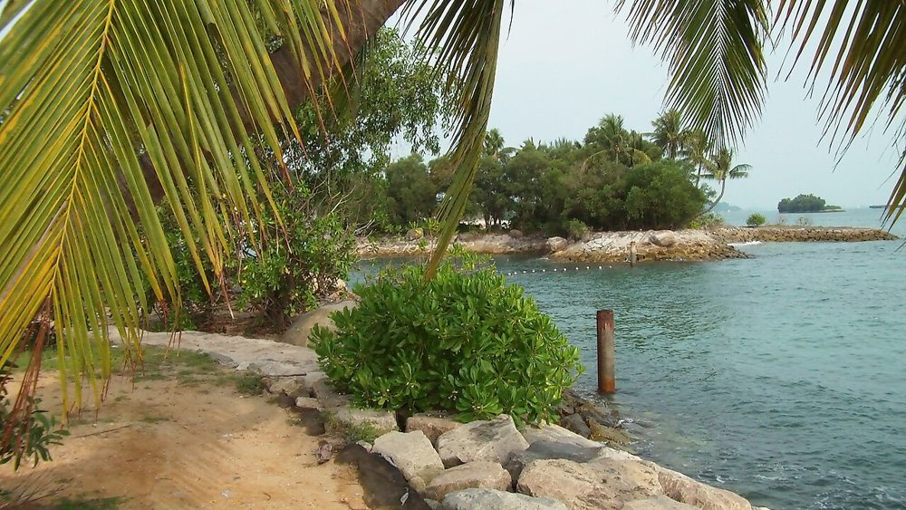
Siloso Beach Sentosa
視體力彈性停留
海洋館後若還有精神，可以看海；海灘不在館外就到，島內仍需移動，纜車票另計。
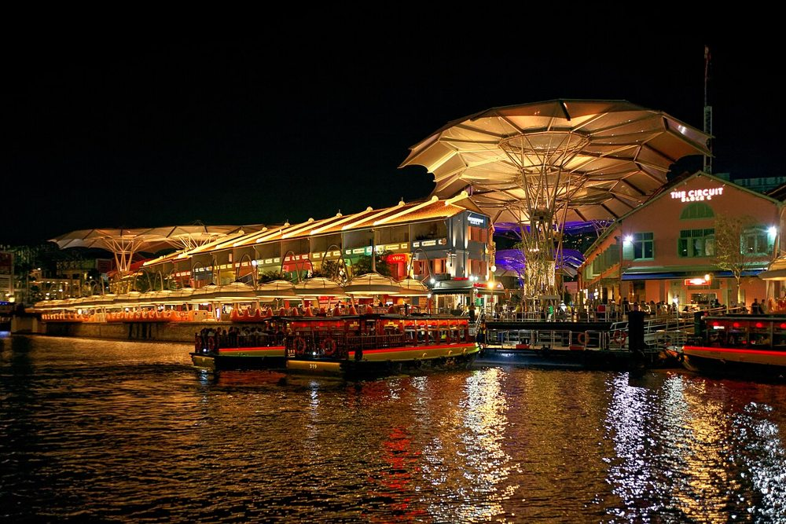
Clarke Quay
散步 30–45 分鐘
河岸燈光與餐廳，坐下用餐再加一小時。可以與遊船同晚安排。
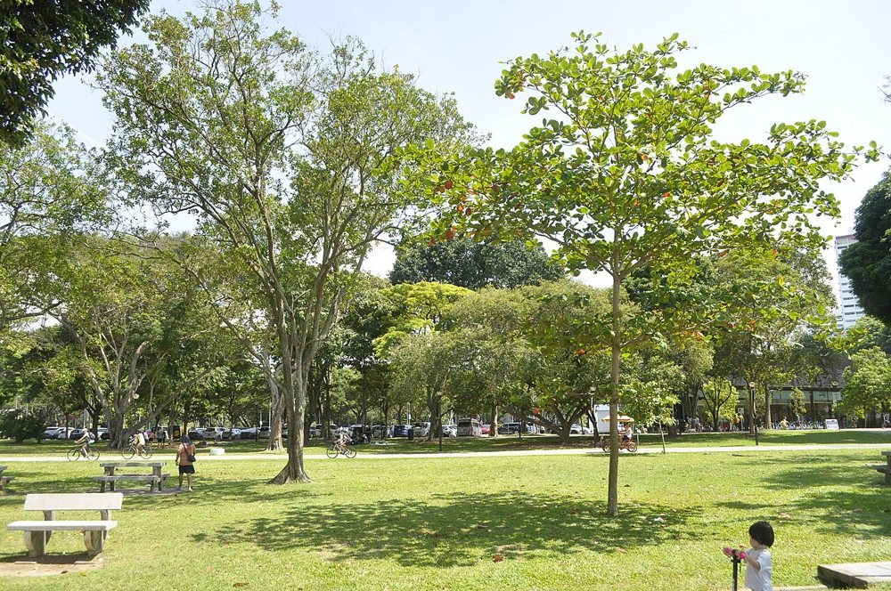
East Coast Park Singapore
留一段完整休閒時間
想吹海風或吃海鮮再專程來。園區很長，叫車前選好餐廳或具體入口。
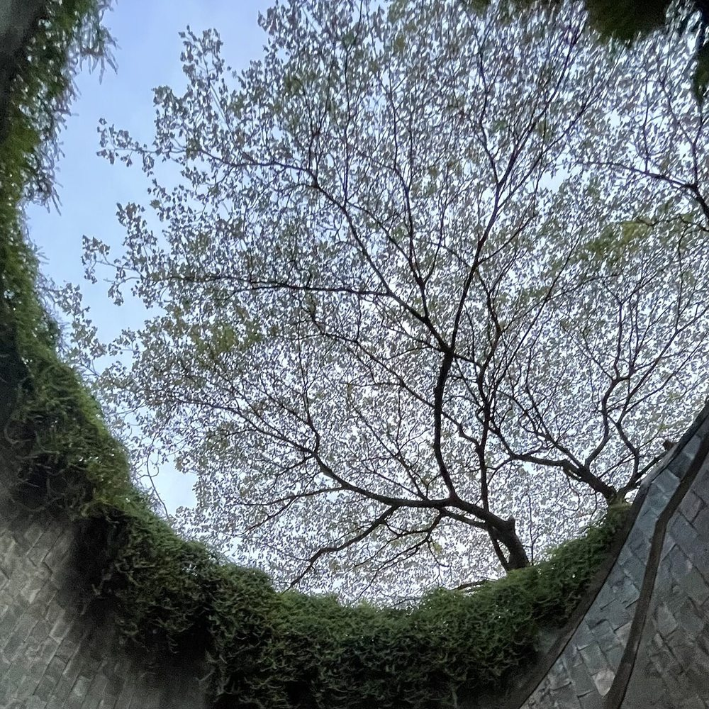
Fort Canning Park
45–75 分鐘
市區小山有坡道與階梯。長輩若想少走路，可改選美術館或河岸遊船。
10 / SINGAPORE JOURNAL
航班時間以電子機票為準。
09:25 → 13:55
桃園第二航廈 → 樟宜第三航廈
約 4 小時 30 分。台灣與新加坡無時差。
以上為去程航班參考時刻，出發前請核對電子機票與航空公司通知。
9 月 18 日回程為中午航班，建議早餐後離開飯店，起飛前 3 小時抵達樟宜機場。
車程約 20–30 分鐘，尖峰與叫車時間另留緩衝。請先確認實際航班、時刻與航廈。
Google MapsSG Arrival Card 已填妥。把確認信留在手機，護照與電子機票放在容易拿取的位置。
入境卡免費，於抵達前 3 天內（含抵達日）提交。
ICA 官方資訊可用 Grab，或請飯店、餐廳叫車。若搭大眾運輸，大眾運輸可以感應信用卡。
進出站使用同一張卡或同一裝置。
九月通常炎熱潮濕，白天約 31°C、夜間約 25°C，午後可能驟雨。備飲水、帽子、摺疊傘、防滑鞋與薄外套；商場與餐廳冷氣較強。
英式三孔轉接頭；當地 230V，先看充電器標示。
規劃旅費可先用 S$1 約 NT$24.5–25.5 粗估；這不是即時匯率，實付金額依換匯與信用卡入帳。
點海鮮先確認總價；帳單已有服務費時，依自身意願決定是否另給小費。